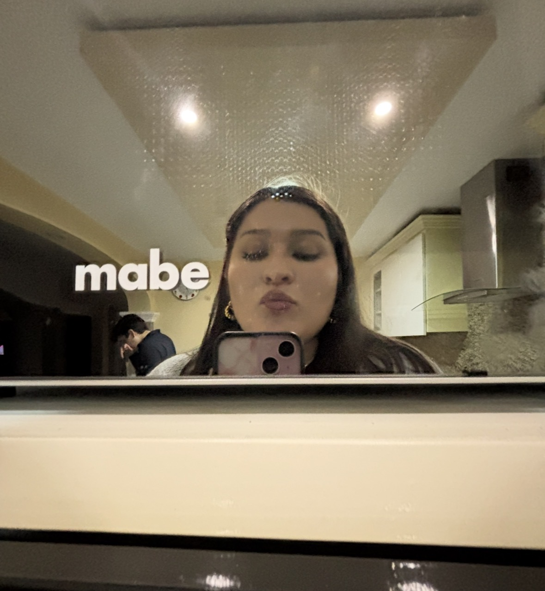
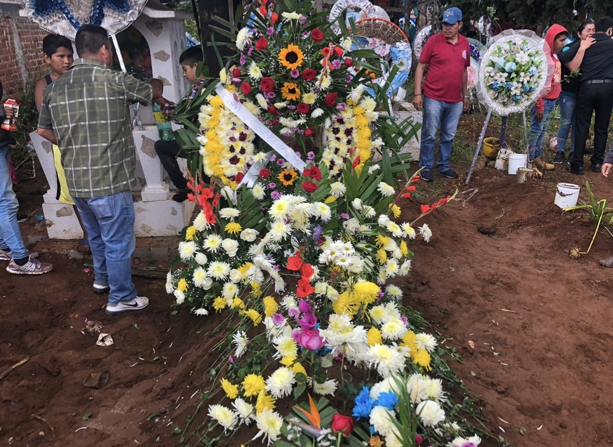
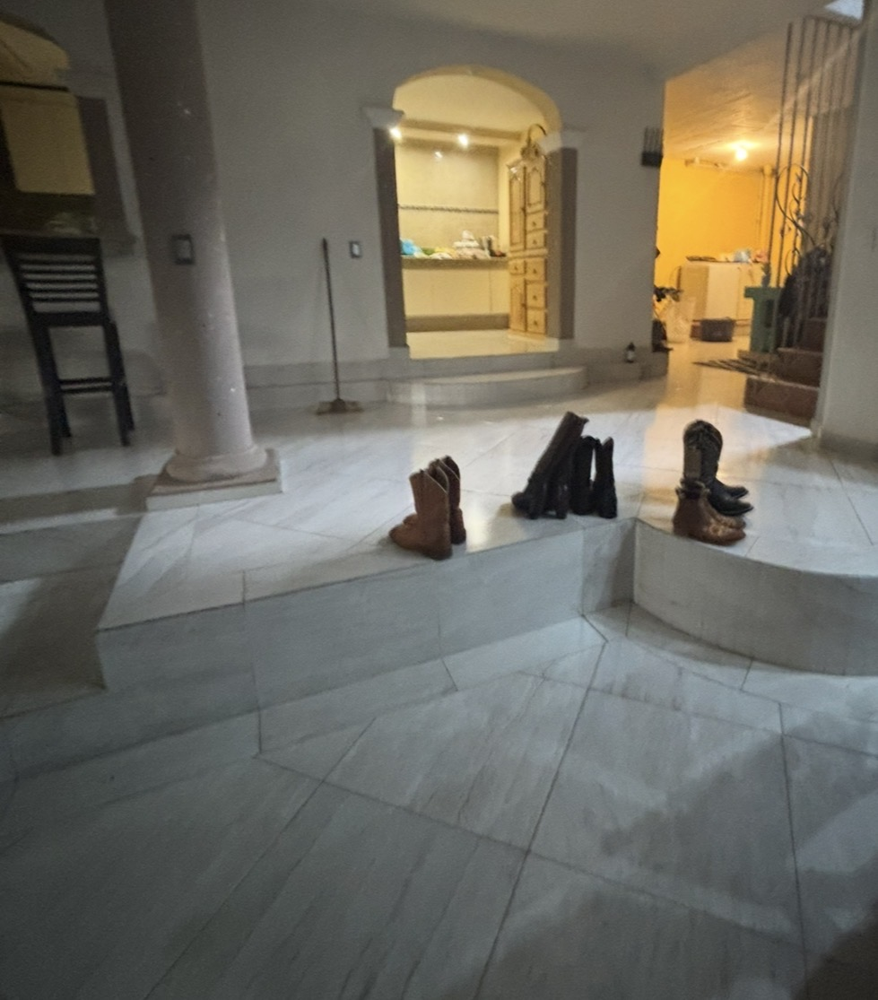
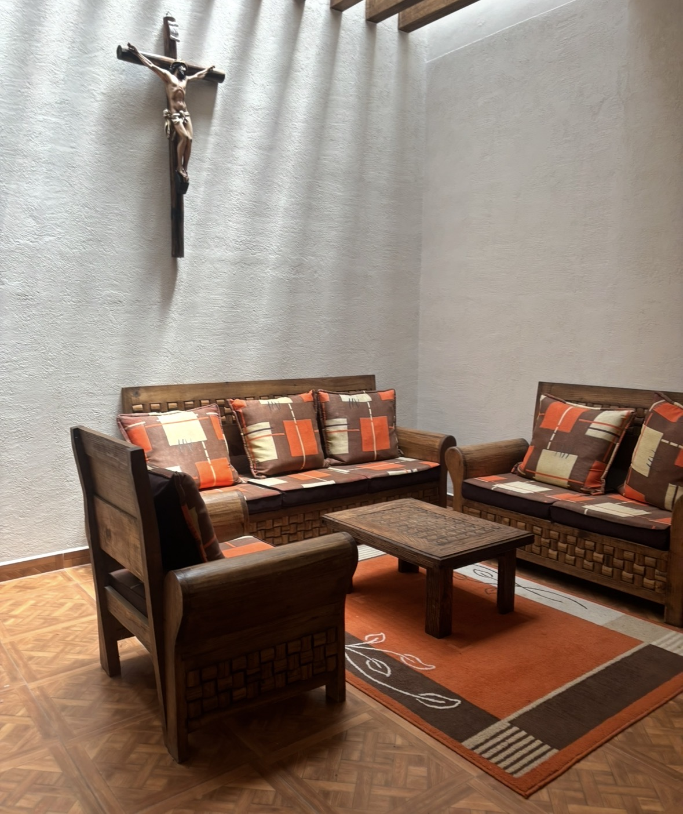
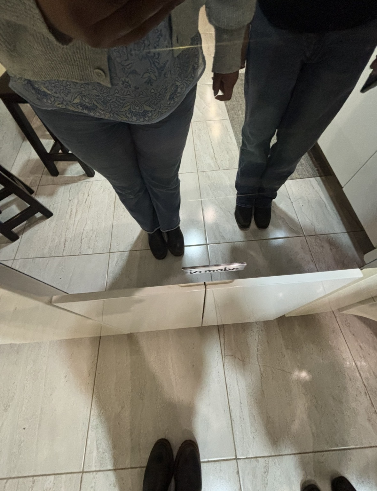
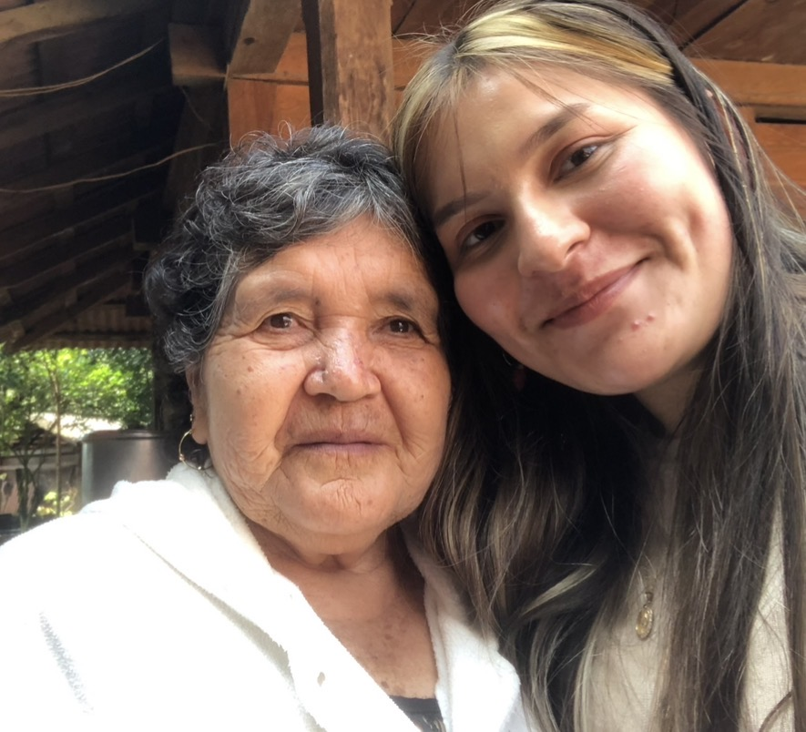
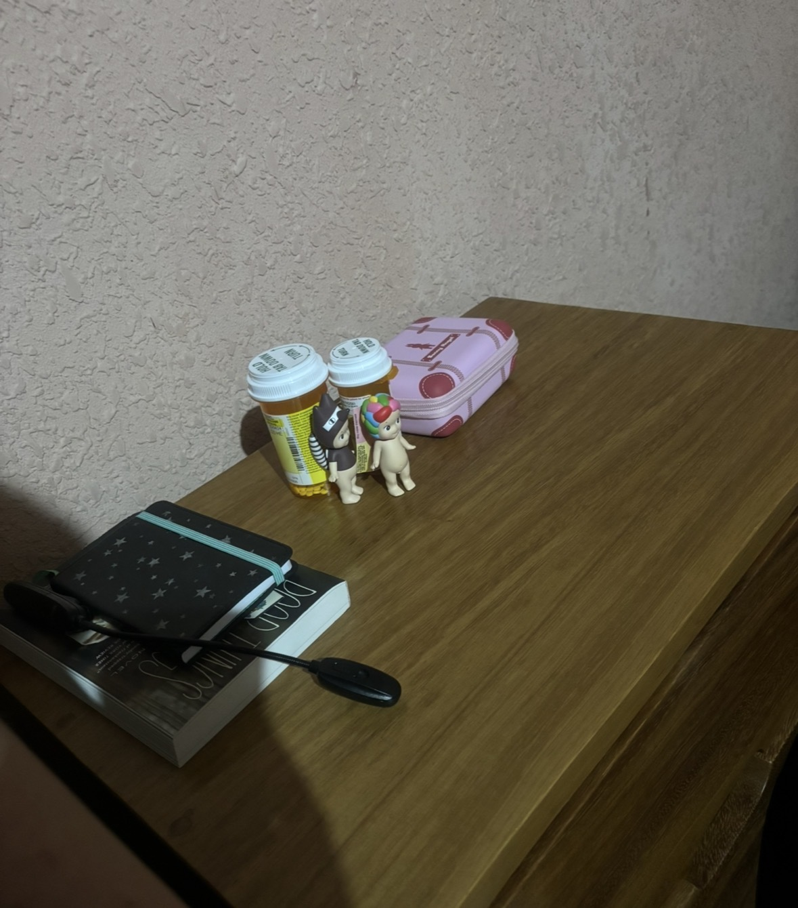
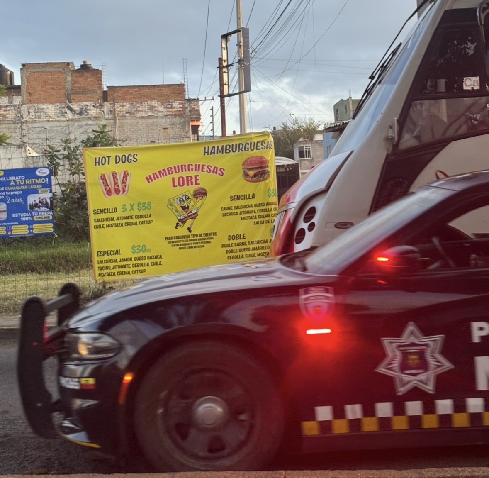
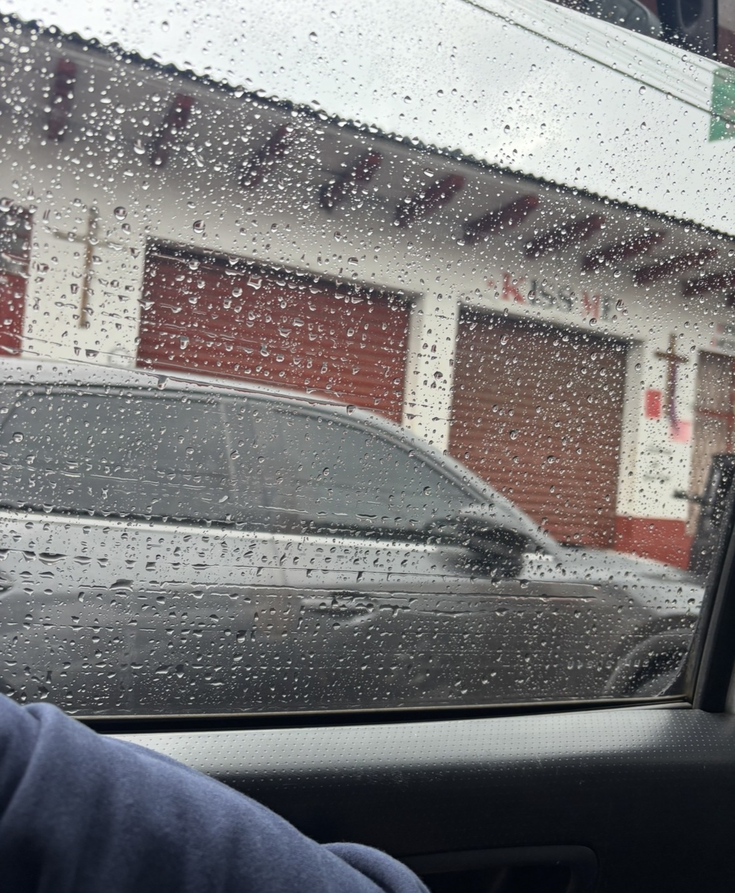
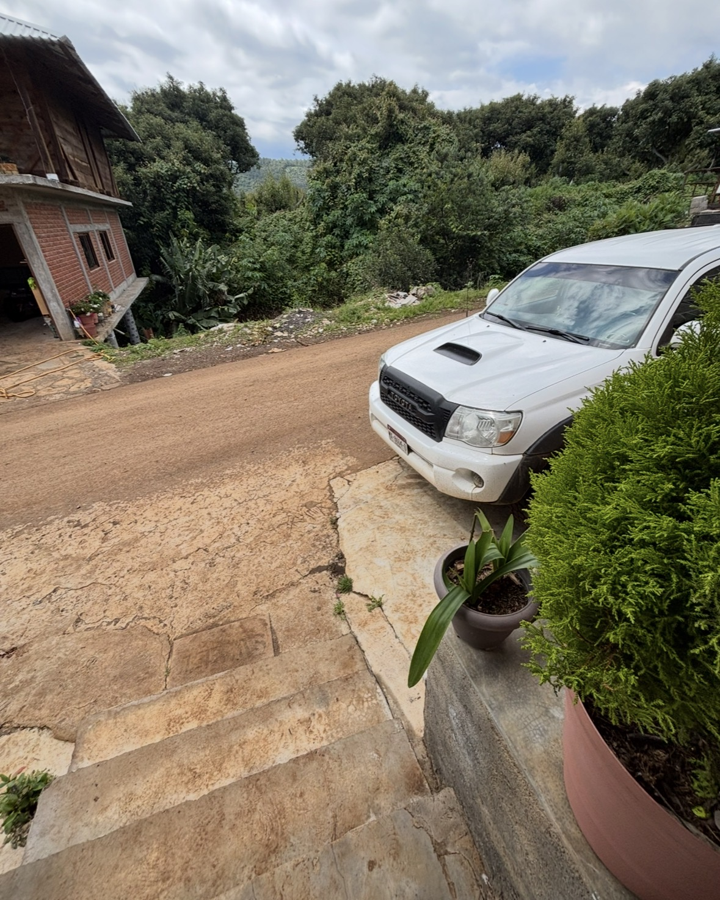

How Michoacán fits into the project
I am sometimes here. I want to go, I go, I get tired and want to go home, and then I miss it when I get back home.
I probably spent at LEAST ten hours driving around here. in the back of a tiny truck, sweaty, humid, and legs cramping bad. I tried getting behind the steering wheel for a change and got stuck in the mud. They did not let me behind the steering wheel again.
Photos from Michoacán
Add photos or screenshots from Michoacán, Mexico here — landscapes, streets, or anything that shows what these drives feel like.











Dates & hours on the road
Use this chart to record specific drives to or around Michoacán — jot down the date, how many hours you spent on the road, where you were going, and any quick notes.
| Date | Hours | From / To | Notes |
|---|---|---|---|